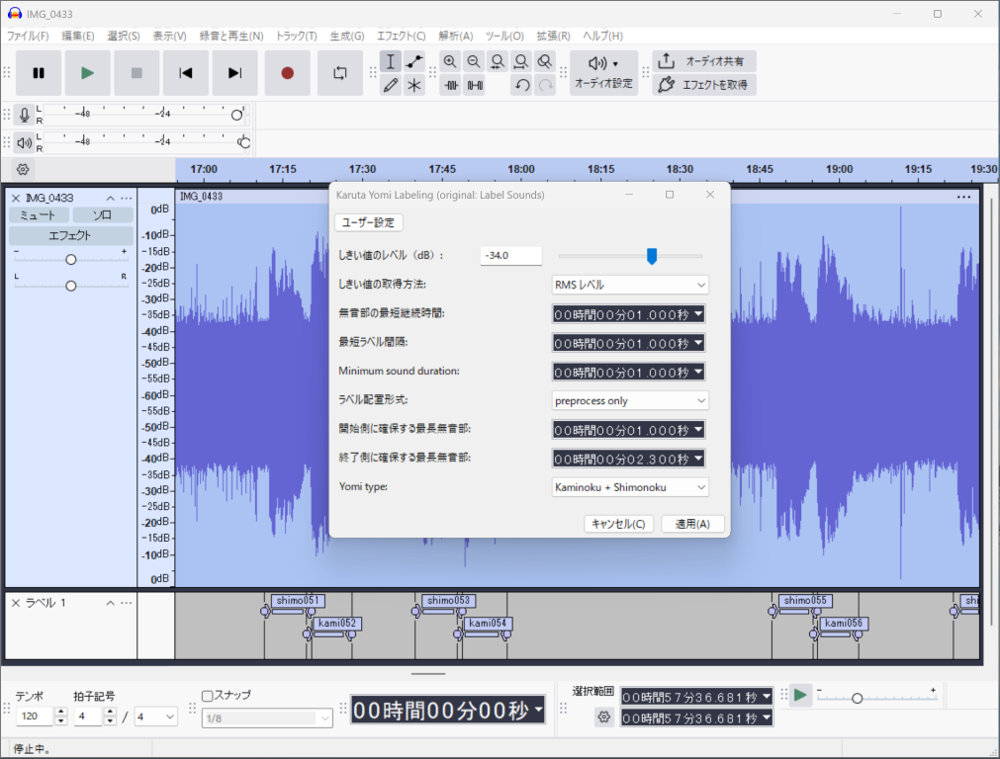

競技かるた読み抽出プラグイン
概要
このソフトウェアは百人一首(競技かるた)の読み部分をラベルを付けて抽出できるAudacityプラグインです。
読手講習会用の音源作成や、かるた動画の作成に使えます。

スクリーンショット
使用方法
インストール
ダウンロードはこちらからできます。
Audacityへのインストールはツール > Nyquistプラグインをインストール からインストールしてください。
うまくインストールできると解析 > Karuta Yomi Labeling (original: Label Sounds)が増えているはずです。
実行
動画や音声を読み込んだ後、下記を設定してから実行します。
- しきい値のレベル
- この値以下を無音として判定します。波形を見て設定してください。
- しきい値の取得方法
- 通常はRMSにしておけばokです。
- 無音部の最短継続時間
- 無音部の最短継続時間。1秒前後
- 最短ラベル間隔
- 前回のラベルからどの程度空けるか。
- minimum sound duration
- 最短の有音部。これ以下の場合には無視される。
- ラベル配置形式
- 動画の場合にはpre+postにする。(音の終了時間が無視され、開始の前後にマーカーを配置します。)
読みの場合はEntire Yomiを選択。確認はpreprocess onlyとする。
- 開始側に確保する最長無音部
- 開始側に確保する秒数。動画の場合は余韻を含めるため1秒程度にセット
- 終了側に確保する最長無音部
- 終了側に確保する秒数。動画の場合には2.3秒程度
- Yomi type
- Keep it all：削除しない。
Kaminoku+Shimonoku：上の句と下の句を残し、ノイズを削除。
Kaminoku only：上の句のみ。動画用を想定した機能
動画編集の際には、ラベル配置形式: pre+post、開始側に確保する最長無音部: 1秒、終了側に確保する最長無音部: 2.3秒、Yomi type: Kaminoku only
とすると余韻～上の句読み開始周辺にラベルを配置できます。
エクスポート
Audacityのファイル > ほかをエクスポート > ラベルをエクスポート からラベルをエクスポートしてください。
動画のカット編集
動画用にフォルダを作り、動画ファイルと上でできたラベルファイルを入れてください。
上でエクスポートしたラベルを使ってこちらのページからOTIOファイルを設定＆ダウンロードできます。
出来上がったoutput.otioも同じフォルダに入れます。
OTIOファイルは対応する動画編集ソフトに読み込ませることで、動画が自動でカットされます。
(KDEnliveで動作確認しています。)